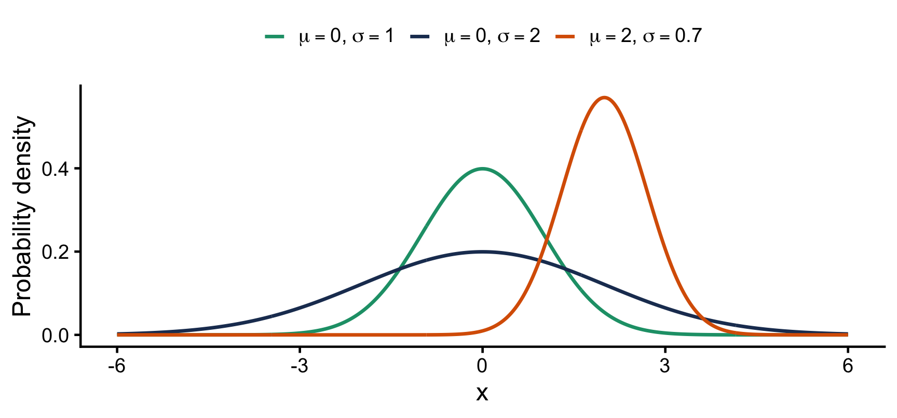
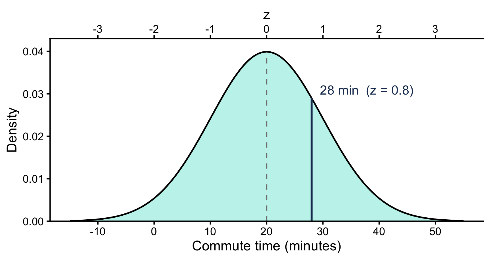
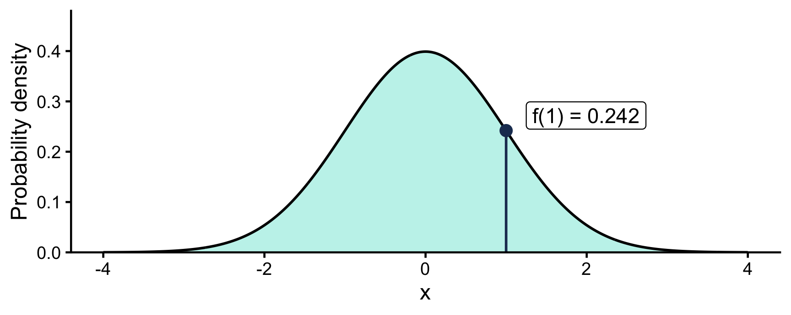
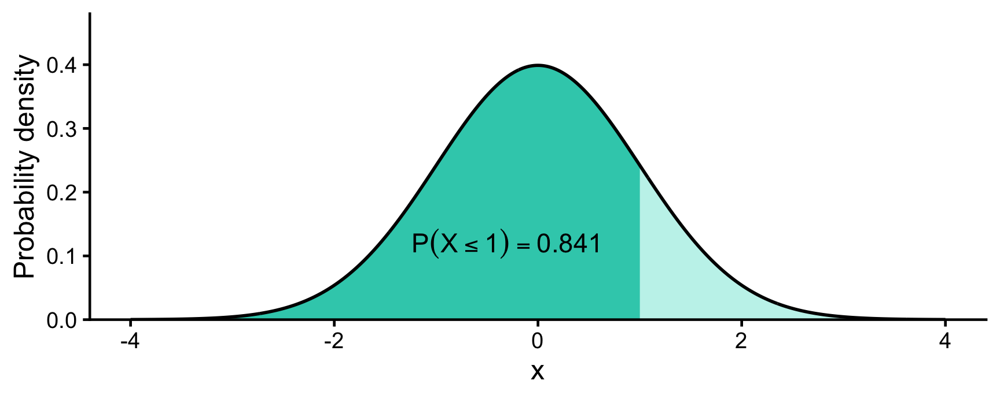
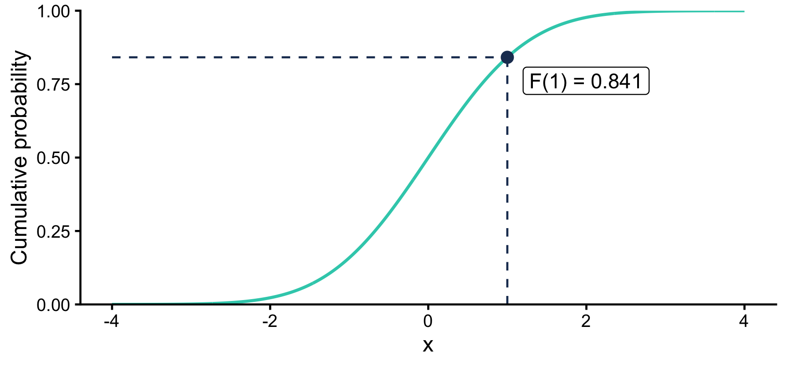
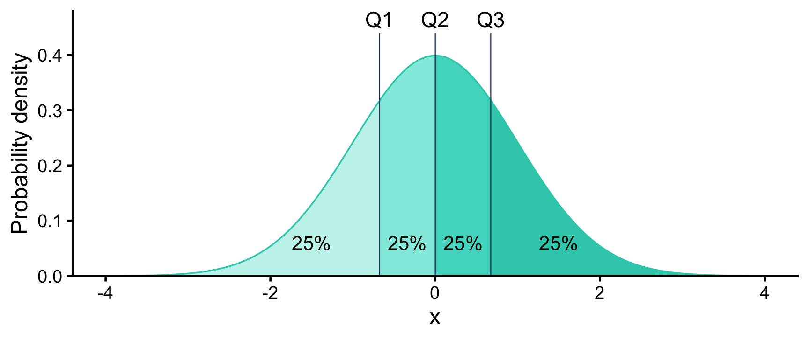

What is a normal distribution?
A continuous probability distribution that is:
- Bell-shaped and symmetric around its center
- Fully described by two parameters: mean \(\mu\) (center) and standard deviation \(\sigma\) (spread)
- Mean = median = mode
We write \(X \sim N(\mu, \sigma^2)\).
The standard normal is the special case \(\mu = 0\), \(\sigma = 1\): \(Z \sim N(0, 1)\).
Same shape, different \(\mu\) and \(\sigma\)

\(\mu\) shifts the curve left or right. \(\sigma\) stretches or squeezes it. Total area is always 1.
Z-scores: any normal to the standard normal
\[
z = \frac{x - \mu}{\sigma}
\]
How many standard deviations \(x\) sits from the mean.
If \(X \sim N(\mu, \sigma^2)\), then \(Z = \frac{X - \mu}{\sigma} \sim N(0, 1)\).
Example. Commute times \(\sim N(20, 10^2)\). A 28-minute commute:
\[
z = \frac{28 - 20}{10} = 0.8
\]
Same curve, two rulers

Figure 1
Probability density function (PDF)
\[
f(x) = \frac{1}{\sigma\sqrt{2\pi}} \, e^{-\frac{(x-\mu)^2}{2\sigma^2}}
\]
The height of the curve at \(x\).

Cumulative distribution function (CDF)
\[
F(x) = P(X \le x) = \int_{-\infty}^{x} f(t)\,dt
\]
The area under the PDF up to \(x\).

The CDF as a curve
Plot \(F(x)\) for every \(x\) and you get an S-curve running from 0 to 1.

Reading it backwards: quartiles
Fix the area, solve for \(x\). The values that cut the curve into four 25% slices are the quartiles.
